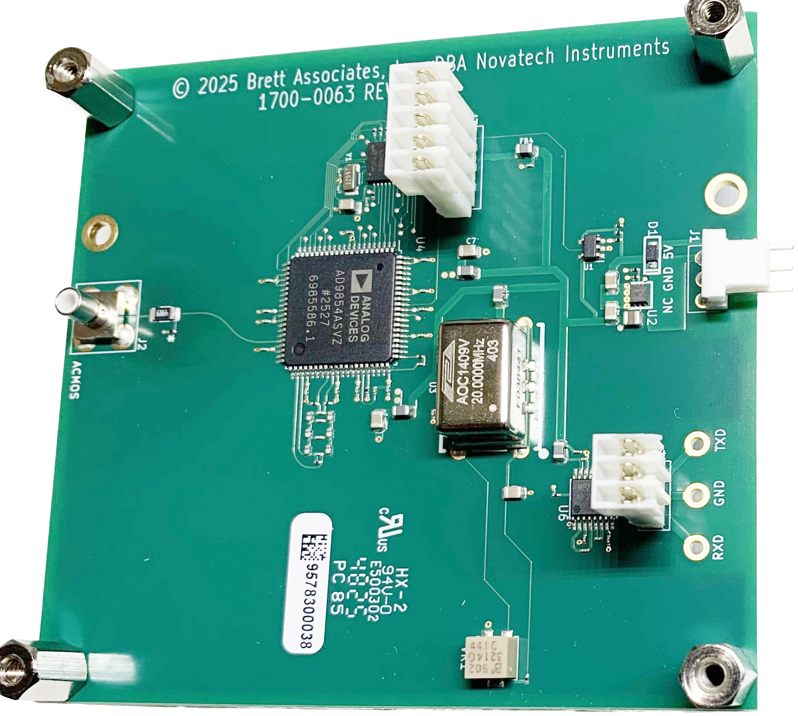

DDS8mh

The Model DDS8mh is a 48-Bit Direct Digital Synthe- sized (DDS) Clock Generator on a small circuit board with an asynchronous serial control port (RS232). The DDS8mh provides one programmable 3.3V ACMOS output signal which can be set from 100Hz to 100 MHz in steps of 1 µHz.